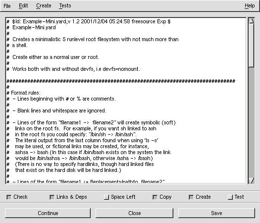

bOOTrOOT makes the development, construction, and testing of distributions fun and simple.
Download gBootRoot
Newest version
(Milestone version 1.3.1 dedicated to the first ever
MORLUG meeting in my
hometown!)
gbootroot source (type make to install)
gbootroot debian package
Add-ons
make-debian-x11 source (type make to install)
make-debian-x11 debian package
Users who use packaging tools which support apt should add these lines to
their sources.list:
deb http://prdownloads.sourceforge.net/avd ./
Older versions found at this site
and

How to Use gBootRoot's UI
 The most important button to
familiarize yourself with is the Submit button which starts the whole process;
dialogs are presented as the process continues asking you if you want to
continue "OK" or stop "Cancel".
The most important button to
familiarize yourself with is the Submit button which starts the whole process;
dialogs are presented as the process continues asking you if you want to
continue "OK" or stop "Cancel".
The first row presently has only one Boot Method choice: "2 disk compression." Clicking on the menu on the right selects the Boot Method.
The second row allows you to select the kernel for the Boot/Root set. You may either use the file selector button on the right hand side, or you may type in the location on the left hand side.
The third row allows you to select the compressed filesystem you are providing, using either of the two ways mentioned before. You may use a pre-made root filesystem or you may create one using one of the Methods provided in the Advanced Root Section.
The fourth row allows you to select the device you want to use. The default device is the first floppy disk - /dev/fd0.
The fifth row allows you to choose the size of the device being used. The default size of 1440 assumes you are using a floppy drive (Note: You may want to experiment with 1722 which works fine with many floppy drives.), but can be used with other sized devices like tape drives. Click on the appropriate radio button to choose either gzip or bzip2 compression if the program doesn't automatically detect it.
Verbosity Box
 The slider bar on the right allows the output of the verbosity box
to be
changed from the highest (2) to the lowest setting (1) or to be turned off (0)
or on again. At times it may be advantageous to turn off the
verbosity box
since large quantities of output to this box may cause gbootroot to use too
much cpu power; however, output may still be found in the text file "verbose"
in /tmp/gbootroot_tmp'time-date' or /tmp/gboot_non_root_`id -u` for
normal users.
The slider bar on the right allows the output of the verbosity box
to be
changed from the highest (2) to the lowest setting (1) or to be turned off (0)
or on again. At times it may be advantageous to turn off the
verbosity box
since large quantities of output to this box may cause gbootroot to use too
much cpu power; however, output may still be found in the text file "verbose"
in /tmp/gbootroot_tmp'time-date' or /tmp/gboot_non_root_`id -u` for
normal users.
Using the Advanced Boot Section
 Libraries & Binaries & Modules check boxes: Turn off and on the
stripping of symbols. The stripping
behavior for libraries may be changed by clicking on the right mouse button
to change --strip-debug to --strip-all. Binaries default to
--strip-all and Modules default to --strip-debug.
Libraries & Binaries & Modules check boxes: Turn off and on the
stripping of symbols. The stripping
behavior for libraries may be changed by clicking on the right mouse button
to change --strip-debug to --strip-all. Binaries default to
--strip-all and Modules default to --strip-debug.
"Devel Device" If the device used for development is different than the actual boot device, use this field to indicate that device. You will have to run lilo -v -C brlilo.conf -r "device mount point" manually at a later time on the actual boot device.
"Opt. Device" Add devices to the boot disk which are necessary for the kernel to function properly. Put a space between each device. For instance, /dev/fb0 for frame buffer devices.
"append =" Add append options to brlilo.conf. If you are using a frame buffer device you could add something like video=matrox:vesa:402,depth:16.
"Kernel Module" Add the modules found in /lib/modules/kernel-version which are necessary for the Boot Method to work properly. If these modules aren't found in the modules directory it is assumed that they either are in the kernel or they do not exist. In the case of 2 disk compression, floppy needs to be included in the kernel or included as a module. Kmod inserts the modules, and kmod needs to be built into the kernel along with initrd and ramdisk."
"Kernel Version" Override the kernel version number found in the kernel header. This will change the /lib/modules/kernel-version directory.
System.map: When a non-running kernel is chosen it is important
to include a copy of that kernel's System.map file so that depmod can use
the correct set of kernel symbols to resolve kernel references in each
module. This can be found in the kernel's source code after
compilation.
Using the Advanced Root Section
 "Root Device" This is the device used for the root filesystem when
constructing the Boot/Root set. You may choose a device which is
different
than the Boot device, but presently only floppy devices are supported.
"Root Device" This is the device used for the root filesystem when
constructing the Boot/Root set. You may choose a device which is
different
than the Boot device, but presently only floppy devices are supported.
"Root Device Size" The size of the actual media used for the Root Device.
"Root Filename" The name give to the root filesystem when initially made in the temporary creation location. The save button allows the creation to be saved in the permanent default location when the Accept button is pressed.
"Filesystem Size" Root Methods make the filesystem the size which is specified here.
"Compression" Off by default to allow user-mode-linux testing. Turn on compression when you are ready to use a Boot Method which requires compression.
"Method" The root filesystem creation method.
"Template" The template associated with a Root Method. Not all Root Methods have templates.
"Generate" This puts the chosen Root Method in action.
"UML" Abbreviation for user-mode-linux. This is a linux kernel which runs on top of the host system's linux kernel and allows a you run a live root filesystem.
"Accept" This accepts the created root filesystem if it is found in the temporary creation directory. The UML box and the main section will now reflect the path to this root filesystem. You can now test with the UML button or a put together a complete Boot/Root set with the Submit button.
User Mode Linux Box

"Xterm" Choose an xterm with its executable options switch.
"mconsole:" Allow you to pass the help, sysrq, config, and remove commands to the mconsole to control the Linux virtual machine specified with the umid value. Good information about sysrq is found in Documentation/sysrq.txt in the Linux sources.
sysrq (Shows sysrq option values in virtual machine.) sysrq [0-9|b|e|i|l|m|p|r|s|t|u] reboot halt config <dev>=<config> remove <dev> switch <umid> version help
"Options" Enter uml command-line options like: mem=64,
devfs=nomount. The umid option is used by
the Reboot and Halt to determine which Linux virtual machine is
running. The umid value may be changed by
altering the value for the switch option in the mconsole entry
box to allow control of a different Linux virtual machine.
umid=bootroot mconsole: switch bootroot2 [Enter] mconsole: sysrq s sysrq u sysrq b [Enter] mconsole: switch bootroot [Enter]
"Root_Fs" Choose an uncompressed root filesystem. Append with ubd?=.
"Reboot" Passes the reboot command to the mconsole to reboot the Linux virutal machine.
"Halt" Passes the halt command to the mconsole to halt the Linux virtual machine.
"Abort" Abort user-mode-linux kernel processes. Should be used as a last resort when Halt fails.
About the Yard Box

The Yard Box is a Root Method which is "Generated" from the Advanced Root Section after a Template is chosen. It has several interesting features.The check boxes at the bottom represent the different stages involved in creating a root filesystem. The behavior of these stages may be altered in three ways: Edit->Stages->one-by-one (default) will perform each stage sequentially, stopping between each stage, the user may continue the process by pressing the Continue button. Edit->Stages->continuous proceeds non-stop through all the stages. Edit->Stages->'user defined' allows the user to choose any stages the user wants, and will then proceed through all the chosen stages. Choosing only 'Check', 'Links & Deps', 'Copy', and 'Create' is a good example.
The behavior of some of the stages may be altered. For instance Alt-T allows you to choose which tests to run on the newly created root filesystem.

Press Alt-S to enable template text searching in either direction. Find exact matches or ignore case with the case sensitive check box.

Use Ctl-S to save changes to a template, Alt-A to save the template with a new name, or Alt-N to create a new template. bOOTrOOT will not allow read-only templates (ex: Examples) or template links to be saved with their own name; after you make changes to these kind of templates, save them with a new name to preserve the changes.

Edit->Setttings has two check boxes which allow you to turn on and off the automatic NSS and PAM configuration files parsing behavior described in detail in Example.yard and Example-Mini.yard.

Edit->Settings->Stripping allows you to turn off/on stripping for Libraries, Binaries, and Modules. --strip-all is the default for binaries and libraries, and --strip-debug is the default for modules; however libraries may be changed to --strip-debug in the settings.

Edit->Setting->Paths allows you to prepend a new search path to gbootroot's environment $PATH variable.

Edit->Replacements in your $HOME/.gbootroot/Replacements directory using an editor of your choice.

Create->Replacements creates special replacement files. Presently it creates a fstab configuration file as Replacements/etc/fstab.new in $HOME/.gbootroot/yard/.
Filesystem Box

The root_fs helper provides support for these commands:
mke2fs mkreiserfs mkcramfs genromfs mkminix
Notes:
1). All these commands may have options added, but it is uneccessary to add
directory, device, or source options 2).
Mkcramfs and genromfs use the filesystem given a
filename in the ARS as the source to produce another filesystem which is
named respectively with _cramfs or _romfs appended to the original name of
this filesystem.
If in doubt
what this all means, watch the verbosity box when the filesystem is created,
and things should become more clear.
FAQ
1. What's the advantage of using this program?What's the advantage of using this program? [back]
BootRoot was the original program, but I decided that a GUI approach provided the user much more versatility and power in creating distributions. Since the first gBootRoot, bOOTrOOT has become a full blown distribution creation program which may be used by a normal user. It may be used for the creation of root filesystems in every imaginable application from Embedded Systems to Mini Distributions to Macro distributions to Full sized Distributions. The root and boot filesystems may be tested long before implementation by using user-mode-linux. Boot Methods are provided to allow root filesystems to run from different types of media. Historically, developers have written scripts which have focused on providing a particular type of root filesystem and boot method. Observation reveals that all these approaches share many commonalities. gBootRoot has been designed to embrace these similiarities, and to allow developers to create drop-in methods via modules or easy to understand templates. gBootroot is the GIMP of distribution creation!
How do I use gBootRoot? [back]
1. Download root_fs_tomrtbt_1.7.205.bz2 from user-mode-linux at Sourceforge to your $HOME/.gbootroot/root_filesystems.
2. bzip2 -dc root_fs_tomrtbt_1.7.205.bz2 > root_fs_tomrtbt_1.7.205.
3. Run gbootroot. Click on the Advanced Root Section (ARS), click on the UML button. Select root_fs_tomrtbt_1.7.205, add devfs=nomount to the options, and click on the Submit button.
4. Click on the Advanced Boot Section (ABS). Root_fs_tomrtbt is about 16M, so add ramdisk_size=16384 to the 'append=' entry. From the main box choose '2 disk compression', and press on the Root Filesystem button and select root_fs_tomrtbt_1.7.205.bz2.
5. Click the Submit button on the main box. Have two floppy disks ready.6. When you boot the boot disk you will see Lilo, you may access the menu using [Ctrl] and [Tab] to see the available images, or wait for the prompt to insert the root disk.
7. Download root_fs_debian_x11-(latest revision).bz2. Then follow the instructions in the first three steps, but don't add devfs=nomount. This root filesystem was created with the make_debian-X11 script from the make-debian-x11 add-on found at gbootroot's Sourceforge home.
8. Click on the ARS if its not already opened. Choose Yard from the Method pull-down menu. Choose Example-Mini.yard from the pull-down Template menu. Click on the Generate button. The Yard Box will pop up. Click on the Continue button until the Create check box turns off. You could continue to the tests, but they really wouldn't apply to this minimalistic example because there are no links or login type files in the template.
9. Experiment with Edit->Stages from the Yard Box menu. Try different types of staging behavior, and notice the differences.
10. Test your creation with the UML box as explained in step 3. You will want to add init=/bin/bash to the Options entry.
11. At this point you will probably want to play around a little bit. Familiarize yourself with the Format Rules found near the top of the template. You may want to save the template with a different name and experiment with changes, or create a new template using File->New (Shortcut: Alt-N).
12. Choose Example.yard from the Template menu in the ARS. Save it with a new name.
13. There are two types of inittabs provided for each major distribution type. The inittab with nodevfs appended doesn't use the device fs, i.e. the devfs=nomount kernel option. Uncomment the inittab, getty, and gettydefs (if required) for your distribution type. If you aren't using Debian make sure to comment (#) out the corresponding stuff for Debian.
14. Example.yard template introduces you to Replacements like the inittabs described above. Replacements can be anywhere and are specified in the template as either an absolute path or relative to $PATH (Edit->Settings->Path); the default path location for Replacements for users is $HOME/.gbootroot/yard/Replacements. Also, this template introduces you to links, $VERSION, how library dependencies are automatically figured for binaries and the automated approach for finding service modules and dependencies for PAM and NSS. Once you learn the format rules and how they are interpreted by the program you will find that making your own templates is quite simple.
15 Click on the Continue button until you finish the Space Left stage. Adjust the Filesystem Size in the ARS to a size larger than the Total space shown in the verbosity box. Create your root_fs, and make sure there was enough room left. You may have to adjust the size and run Copy and Create again.
16 Now that you have a root filesystem you may continue to the Test stage and observe what is missing. Next run the root_fs from the UML box. If things don't work correctly you will have to hunt down the cause, make the appropriate changes and proceed through the stages again. If you only make a change to a Replacement, you only have to run the Copy and Create stage again. If you make a change to the template you have to run at least the Check, Links & Deps, Copy, and Create stages again.
17. Now that you have successfully created a working mini distribution from Example.yard, re-create it with a different filesystem type: ext2, minix, reiserfs, romfs or cramfs.
18. Open up the Filesystem Box (Edit->'File System") and click on
the UML Exclusively check button, and enter a filesystem command. For this
example mkminix will be used to create a minix filesystem.
Normal users will want to keep the Preserve Permissions check
button off. Press the submit button when finished.
19. Adjust the Filesystem Size in the ARS larger than 8192k, you could also make it smaller, but the point of this exercise is to introduce users to how the 8192k barrier of genext2fs can be exceeded.
20. Set the staging behavior to user defined, and choose the Create check button if you are a normal user or if you are root and created the root_fs in stages 12-16 with genext2fs, otherwise, root needs to choose the Check, Links & Deps, Copy, and Create check boxes. Press Continue and observe what happens. Do step 16.
21. Can we create a different filesystem type
for the root filesystem we just altered?
Enter genromfs to create a romfs filesystem.
Set the staging behavior to user defined if this hasn't already been done,
turn on the Create check button,
and press the Continue button. Assuming you've left the
ARS open, press the UML button so that the UML box closes and reopens, and you
will notice that your fs has _romfs appended to it. Try it out.
You may
notice complaints on boot-up about ioctl.save, to remove these complaints you
could create a replacement ioctl.save, edit and save the changes to the
template, re-create the filesystem, and test again.
22. So what about devices for normal users? Genext2fs creates devices for normal users, however, when UML Exclusively is used a normal user doesn't have the capability to copy over devices from the host system. Instead, devfs should be used. If more devices are required, devfsd can be used to set them up after the root filesystem is booted. Did you get things to work? Congratulations, you have created a root filesystem without needing to be root!
23. Now that you have done your homework, I set you free to create your own root filesystems from your own templates with replacements of your own choice. Create a root_fs which can fit on a block device, and then create an emergency disk customized for your own system, or create your own customized macro distribution and run it from the UML box to try things you never would have dreamed of doing on your host system. And that is just the beginning of the things you can do.
Oops, I can't get something to work, what should I do? [back]
If something isn't working for you, I want to know because you probably have found a bug. Don't fall into the trap that makes you believe that developers don't want to be deluged with bugs, quite to the contrary. developers love to receive bugs, and I heartily encourage all users to send Free Software developers all their problems. I have experience working in Quality Assurance, and I know that a program with the complexity of gbootroot is a perfect recipe for the existence of all types of bugs. As a developer focusing on the deployment of code it is easy for bugs to slip by unnoticed. Free Source software depends on users sending in bugs if the software is to ever experience rapid development; users shouldn't leave this process to the developers, because this guarantees that they will need to spend lots of time in the testing phase rather than spending time adding great new features.Testers Wanted! Big Reward!
Just because a project doesn't have a name like "Linux" doesn't mean that the project should live by itself without community support, so please send in those bugs. I consider a bug anything which effects the user negatively, whether it is a user interface (UI) which is hard to understand or use, documentation which seems misleading, or if the program doesn't seem to deliver results as it should. Even if you think your problem may be due to your own lack of understanding, I still recommend that you contact me after reasonable attempts, because what you may be experiencing is what "MANY" may be experiencing. At the bottom of this page is the contact information. Your problem will help gbootroot become a better program for all, and you will be a hero!
What are all these CVS directories doing in my replacements? [back]
CVS directories are deliberately put in the Replacement directories to prevent users from making changes to global replacement files. This allows developers who create add-ons (ex: make-debian-x11) to remain confident that any changes made to add-on replacements will remain available to all users. Replacements from add-ons are placed in the archictecture-independent /usr/share/gbootroot/yard/Replacements directory, and the archictecture-dependent /usr/lib/bootroot/yard/Replacements directory. When a user opens up gBootRoot, the program checks to see if there are any new replacements and then creates symlinks from the $HOME/.gbootroot/yard/Replacements directory to the replacement repositories. In general the repositories for replacements are owned by root, so normal users can't make changes to these files; however, when root is editing replacements in the $HOME Replacements location, it should be the administrator's policy to use an editor which respects versioned files (i.e. Emacs). Then the administrator will not be able to make any changes to the replacements repository because the CVS directories keep date information which prevents the editing of these files. The files kept in /usr/lib are usually binary files specific to the host architecture, where as the files linked from /usr/share are often text files compatible with any architecture; however, this directory is meant to be used for data which shouldn't be modified directly by any user (see FHS).
Note for users of version 1.2.14 or earlier: Verions of gbootroot before 1.3.0 didn't have this set-up, instead there were just copies of add-on replacements in the $HOME replacement directory to allow the user to directly modify add-on replacements. In order to get the full benefit of the new change you will need to rename any of the $HOME/.gbootroot/yard/Replacements you've modified and put them in a safe place, then remove the old replacements, and return the renamed replacements.
Can I use a program linked to uClibc in the template? [back]
Binaries are auto-magically checked to discover whether they require libc6 or uClibc. If they are found to require uClibc /usr/i386-linux-uclibc/bin/ldd is used to discover shared library dependencies, otherwise ldd is called without any path.
What do you mean by macro distribution? [back]A macro distribution is a term I coined. It implies a software distribution larger than a mini distribution usually associated with 1.44 to 1.722 sized floppy disks, but smaller than a base distribution which provides the foundation to create a full size distribution. It is usually pruned, and provides the absolute minimum needed to provide all the functionality usually associated with a full sized distribution, yet it still uses the same libraries and binaries. Because it can be made quickly, it is useful for creating a current snapshot of ones own host systems, and can be used to run experiments safely via user-mode-linux without fear of corrupting the host system.
How am I able to create root filesystems as a normal user? [back]Genext2fs is used to allow a normal user to create an ext2 filesystem with all UIDS and GIDS belonging to 0 (root) without the need for a loop or ram device. Device nodes are created from a device table file written to by gbootroot. This program is authored by Xavier Bestel, but the version used by gbootroot has modifications from Erik Andersen (BusyBox) to allow a device table to be used rather than a device listing. The maximum allowable size for a filesystem is 8192k. User and group information can be changed when the filesystem is run from a kernel.
How does this program allow a normal user to create a root filesystem larger than 8192k? [back]
Although genext2fs only allows a normal user to create a UID/GID 0 root filesystem up to a maximum size of 8192k, this program exceeds this barrier by taking advantage of the unique characteristics of user-mode-linux, allowing normal users to explore things they never could before. User-mode-linux is used to boot up a root_fs helper, the program then communicates with the user linux system via expect to automatically create a UID/GID 0 filesystem from the files copied over from the /tmp/gboot_non_root_`id -u1/loopback directory. The steps will vary slightly depending on which filesystem command is chosen, however, the same concept is used. You may apply this to filesystems smaller than 8192 by adjusting the settings in the Filesystem Box. If you want to learn how to do this manually, look at the ten steps below.
The root_fs helper used by gbootroot is completely root-free.
Ten steps to manually make a >8192 fs as a normal user.
1. You may want to create a helper root filesystem (<=8192k), and give it an unique name in the ARS Root Filename. The root_fs created from Example.yard provides all the functionality you need, regardless, you will need some sort of working root_fs with all the necessary system utilities before proceeding with the next step. We will call this root_fs_helper.
2. Create your root filesystem (>8192k) as you normally would when using genext2f, making sure to choose the filesystem size you require from the ARS. Proceed through the required stages, and when you finish the Create stage an ERROR dialog box will pop up saying "Cannot genext2fs filesystem" which you can safely ignore. At this point in the "echo /tmp/gboot_non_ root_`id -u`" directory there is an empty file with the name specified in the ARS Root Filename field which we will assume is called root_fs. Above this directory in loopback/ all files and directories copied over during the Create stage can be found.
3. Open up the UML box from the ARS. In the Root_Fs entry ubd0 should be pointing to the helper root_fs, and ubd1 should be pointing to the empty root_fs file:
ubd0=/tmp/gboot_non_root_1000/root_fs_helper ubd1=/tmp/gboot_non_root_1000/root_fs
4. The devfs is used in this example. Press the Submit button on the UML box, and login to the root_fs_helper. Create two mounting directories if they don't exist. For this example, /mnt1 and /mnt2 are used.
5. Make a filesystem type of your own choice on /dev/ubd/1:
mke2fs -m0 /dev/ubd/1
6. Mount /dev/ubd/1 on /mnt1:
mount /dev/ubd/1 /mnt1
7. Mount the host filesystem on /mnt2:
mount -t hostfs none -o /tmp/gboot_non_root_1000/loopback /mnt2
8. Copy everything from loopback to /mnt1:
cp -a /mnt2/* /mnt1
9. Change UIDs and GIDs to the appropriate user:
chown -v -R 0:0 /mnt1 chown -v -R 1002:1002 /mnt1/home/user
10. Unmount everything. Root_fs is now ready to be used!
How can I create boot disks as a normal user? [back]
Make the boot disk as you normally would. As long as you have write permissions to the boot device you shouldn't run into a problem. However, not all boot loaders can be set-up as a non-root user, but, you may still continue to the end of the process and set-up the boot loader later from a machine you have root access on. In order to use lilo while running gbootroot there are two prerequisites your administrator will have to establish for you. First, he will have to edit the fstab to allow you to mount a certain block device. For instance, to allow you to mount /dev/fd0, you have to mount the /tmp/gboot_non_root_mnt_`id -u` directory. If your UID is 1000, then a line like this is added to the fstab:
/dev/fd0 /tmp/gboot_non_root_mnt_1000 auto defaults,user,noauto 0 0
Next, the administrator needs to give you access to the lilo command. Sudo is a good solution, and in gbootroot the $main::sudo variable is assigned "sudo", this can be changed by the administrator to some other sudo-like program. The administrator then uses visudo to edit the sudoers file with a line like this:
user hostname = NOPASSWD: /sbin/lilo
Note that NOPASSWD is used. Gbootroot won't prompt for a password, and just assumes no password in necessary. I could change this behavior if people request it. If modules are required for the boot method to work properly, you need to have read permissions to them so they can be copied. Now a bootdisk with lilo can be made.
What is make_debian, and how do I use it? [back]
Make_debian is a script which takes information from a Debian installation and creates a template which can be used to make a macro distribution using gBootRoot's yard method. It creates replacements for important configuration files to represent the actual packaging state it will be providing. In order to use this script you need to be running a Debian-like distribution, anotherwards, one which uses dpkg, apt and file-rc to maintain its packaging and boot hierarchy. Dswim is used to collect information used in making the template. When you run the template in the Yard Box as a normal user follow the instructions from the FAQ answer to "How can a normal user create a root filesystem larger than 8192k?"
Run make_debian from the command-line. The script first finds all required packages on your host system, then it checks to see if any of the extra packages mentioned in its configuration are missing. As a rule, even if extra packages are missing, a working distribution will still be created. The script will then ask you a few questions, and then proceed to make Debian-`uname -n`.yard in your template directory.
Extra Packages and static template data:
You can resolve missing packages by installing them on your system, or you can
edit the script and replace those packages with a suitable replacement,
since you may be using a different version of Debian then the author
used when putting together make_debian. Make a copy of make_debian,
and then edit the part under EDIT HERE between qw().
You may edit the static data for the template within the script where it says
EDIT TEMPLATE BELOW.
The make-debian-x11 add-on is actually the
result of
making these modifications. First, extra packages were
added, second, extra replacements were provided and the static information
in the template was modified to reflect these replacements.
When you start a kernel image with 1, you are telling it to start in runlevel 1, not in single mode. Use "single" instead.
While on the subject, it should be pointed at the setting up init and its runlevels is one of the most challenging areas of creating a bootable root_fs. Often your creation will only work with "single" until all the conflicts are resolved. Things are complicated even futher by the fact that devices can now be set up in two majors ways: tty? or ttys/? (devfs). Fortunately, user-mode-linux comes in very handy for hunting down all the bugs.
What does the 2 disk compression method do? [back]
This Boot Method creates a boot disk with lilo, a kernel and an initrd image. The initrd script mounts another root disk with a compressed (gzip or bzip2) filesystem.
There isn't enough room left on my 1440 floppy to make a Boot or Root disk. Is there any way to free up more space apart from reducing the size of the kernel? [back]
Move the device size to 1722. This is a trick that tomsrtbt uses on his famous rescue disk.
(Update 10/06/2001)
Up until mke2fs version 1.19 you were able to do
`mke2fs -F /dev/fd0 1722` on a 1440 device without any problem, but since
then mke2fs has become much more particular about enforcing actual device
size. . Mke2fs will complain:
"mke2fs: Attempt to write block from filesystem resulted in short write zeroing block 1600 at end of filesystem."
I understand Theodore Ts'o reasoning for doing this, but I strongly believe that the old behavior was very useful for people creating mini-distributions so I have issued Feature Request #468652 at e2fsprogs site at Sourceforge. It should be noted that fdformat is an unacceptable solution because it tends to be machine specific, and the original mke2fs behavior made floppies that worked everywhere. Feel free to add your comments to the Feature Request. Thanks.
gBootRoot doesn't start because it can't locate Gtk.pm? [back]
This program requires Gtk-Perl available from CPAN, Freshmeat or most GNU/Linux distributions.
If you roll the floppy density counter down to 0 and then try go back up towards 1440 and 1722, you get very funny figures. [back]
This is because of the way Gtk works. There are two adjustments, step and page increments. When you press your first mouse button the step has been set to 282 so that a person can easily switch between 1440 and 1722. When you use your second mouse button the page is set at 1024. You can go down to zero by pressing your third mouse button on the down arrow. Now page up with the second button to 1440 and step with the first button to 1722. Pretty cool, eh?
While we are on this subject please check out these keyboard shortcuts for Gtk.
Motion Shortcuts
Editing Shortcuts
Selection Shortcuts

{kind=link}